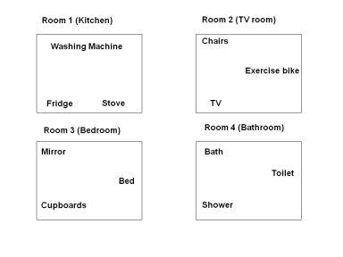

“Whatever you think about, that’s what you remember. Memory is the residue of thought.”
~ Daniel T. Willingham
The system that you are about to discover is the most incredible tool you will ever learn. It will help you grow in ways that you could never imagine. It is so simple, it has been around for 2500 years, and yet few have harnessed its potential. You can use this system to remember any information and mountains of it. It takes practice, but once you use it you will never look back.
This method is the original and still the most effective of all the systems. Using this system is as easy as remembering a journey. Some people think this method is too simple to work, but it works because it doesn’t overwhelm you.
It is the same process as The Car and Body List, but only this time we are using places or markers on a location, journey or route to store information.
Here is how it works:
1) Prepare in your mind an organized location (e.g. a house layout, a journey or a shopping centre.)
2) Create markers or places on this location, same as what we did with the body and car list (in an easy-to-follow order.)
3) Make a clear image (using the SEE principles) of the information that you would like to remember.
4) Place each item you are trying to remember on each of the marked locations.
In short, it is as simple as finding a place like a route, journey or building in your mind to store the information. Then you store it. This system makes remembering large amounts of information as easy as remembering a trip to the nearest shop. You are using the formula again: Long-Term Memory + Short-Term Memory = Medium-Term Memory.
Let me introduce you to The Journey Method with a short exercise. We are going to store twelve useful principles from one of John C. Maxwell’s books. I really enjoy his books because they are always very well organized and therefore making storing information easier. He normally creates a summary list of the topics that he will cover and then he writes in more detail about each topic. You can use the systems to remember all of his lists and laws and become an expert in leadership. Once the information is in a memorable matrix, it will start to attract more information to it; it helps long-term storage and use. When you have it in your head it is so much easier to use, because what is the use of information if you can’t recall what you know?
In his book Today Matters he shares twelve keys that you can focus on daily to get more success and fulfillment in your life. As he says, “You will never change your life until you change something you do daily.” He calls them, The Daily Dozen.
Here are the keys:
1. Attitude
2. Priorities
3. Health
4. Family
5. Thinking
6. Commitment
7. Finances
8. Faith
9. Relationships
10. Generosity
11. Values
12. Growth
Most people will repeat the list of information over and over again and try to force it into their memory. Rote learning and constant repetition creates an aversion to learning and it is frustrating. The more you can encode information into your memory, the more effective the learning. Let’s use a method to find the fun in FrUstratioN. Now all that we have to do is to focus attention and connect each thought to a place. Try this little exercise with me…
I am going to be using four rooms in my house as a journey to give you an example of how you can use this system. The rooms are compartments in my mind that I can use to store new information. Let me guide you through the house and let’s store the information together.
Make sure that your markers are all in an easy to follow order. Then review your markers to make sure you have clear storage compartments. The places must also be near each other, but nicely spaced out.
Here is a mental map of four rooms in my house and twelve places that we will use, and they are:
Room 1 Kitchen: 1. Washing machine 2. Fridge 3. Stove.
Room 2 TV room: 4. Chairs 5. TV 6. Exercise bike.
Room 3 Bedroom: 7. Mirror 8. Cupboards 9. Bed.
Room 4 Bathroom: 10. Bath 11. Shower 12. Toilet.

If I gave you a box with twelve objects in it, would you be able to place it on the furniture in my house? Of course you would, now all we do is turn the information into something tangible, like an object, and then place them in the room.
We start in the kitchen. The first word is Attitude. Imagine someone with a really bad attitude jumping into your washing machine. Clean up his attitude in the machine. SEE it!
At the next place imagine writing all of your Priorities on the fridge door. Use a permanent marker and think about how your priorities are permanently stored on the fridge door.
Imagine a healthy bodybuilder making an apple pie and shoving it into the stove. The apples are also a reminder for Health.
So what was in the washing machine? On the fridge? At the stove?
Now we move to the TV room. The first place there is the chairs. Imagine your whole Family is jumping up and down on the chairs. The more illogical the image, the more it will stick.
The second place is the TV. Imagine a thought bubble coming out of the TV, because it is a Thinking machine. It also influences our thinking.
The final place in the room is the exercise bike, so imagine combing (reminds you of commitment) the exercise bike. It is also a Commitment to use the bike.
In my bedroom the first place is the mirror and here imagine money flying out of the mirror. Your Finances are a mirror of your productivity.
Whatever represents faith for you, place it inside the cupboard. Put Faith on every shelf or hanger.
The next word we want to place on our memory journey is Relationships, and that is on the bed. Okay, you can make your own picture here.
The final room is the bathroom. See a genie jumping out of the bath and he gives you what you wish. The genie giving reminds us of Generosity.
Imagine the shower is made out of gold. Or, you open the taps and gold runs out of it. Gold has great value, and represents Values.
At the last place we imagine a tree growing out of the toilet for Growth.
What was the word connected to each place?
Excellent, that is now your first memory route or journey, and it will begin to open your mind to the possibility of having a perfect memory. You have just learnt the 12 keys in John Maxwell’s book Today Matters, and it was as easy as walking around my house. You will remember all the words if you have connected them properly. Go through it a few times and you will know The Daily Dozen. You will get better results with this method if you used your own environment because you are more aware of the order of the places.
Review the list backwards and you will notice that it will all still be there. By reviewing it backwards, you make the images clearer for your memory. If you made clear images and placed them on the route, the list will be very memorable. This method helps you to see the big picture and zoom into the details. The concepts are brought to life and become concrete. It is always easier to remember something that is experienced in your mind; we remember what we think about.
Now think about this information that you have learned, buy Today Matters and focus on making small changes in these areas daily, and remember it to live it.
This journey or route method shows you what is possible. Every great memory person uses this method more than any other. It is so effective because you can make thousands of storage places. Think about how many markers you can make? We all have a brilliant memory for journeys. You have visited many places in your life; you can use buildings, museums, schools, shopping centers, and almost any location that you know. Make sure they are places you know well, that have significance to you, and they have lots of variety. You can make your routes as long as you want; you can have a place or route for every subject you are learning. Remember to have fun!
This system will change the way that you learn forever. The only effort is trying to improve your ability to make images and placing it on a familiar mental journey. It will feel like you are cheating; it is like having crib notes or a teleprompter inside your head. The journey is like the paper and the images are like the ink. Your imagination can create any information on a familiar journey. It will change your life!
You can use it to remember all kinds of information, I have helped medical students, law students, pilots, managers, and business people remember all kinds of information with this method. I used this method to store the first 10,000 digits of pi. A friend of mine Dr. Yip Swee Chooi remembered the whole Oxford dictionary, 1774 pages, word-for-word with this method. Anyone can store an unlimited amount if they choose to spend the time. Some people say, “I will run out of space.” If I gave you a truck full of objects to place in a shopping mall, would you be able to do that? Of course you would. If you look for it, you will find thousands and thousands of places just waiting to be used in your mind. There are no limits to this system, only limits in your own thinking.
The important thing is that you practise. The more you practise the better you will get.